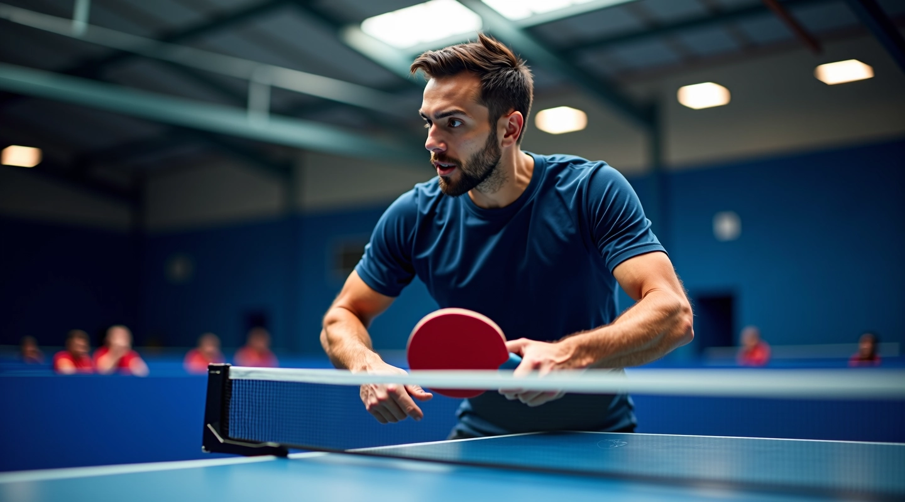
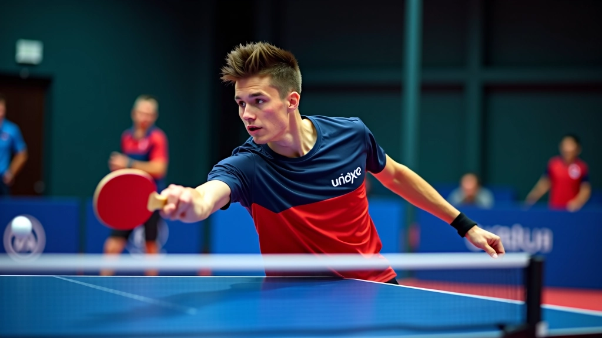
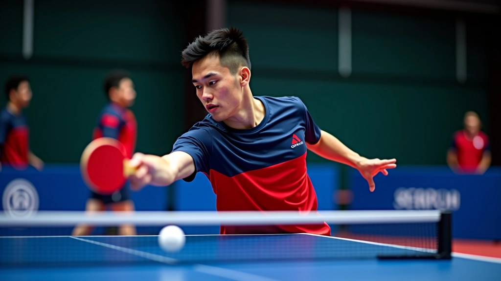
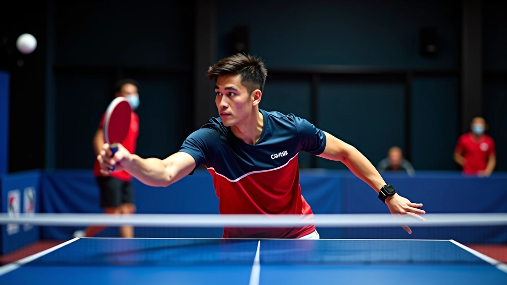
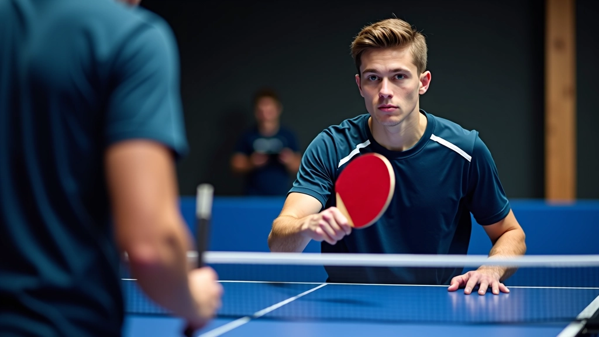
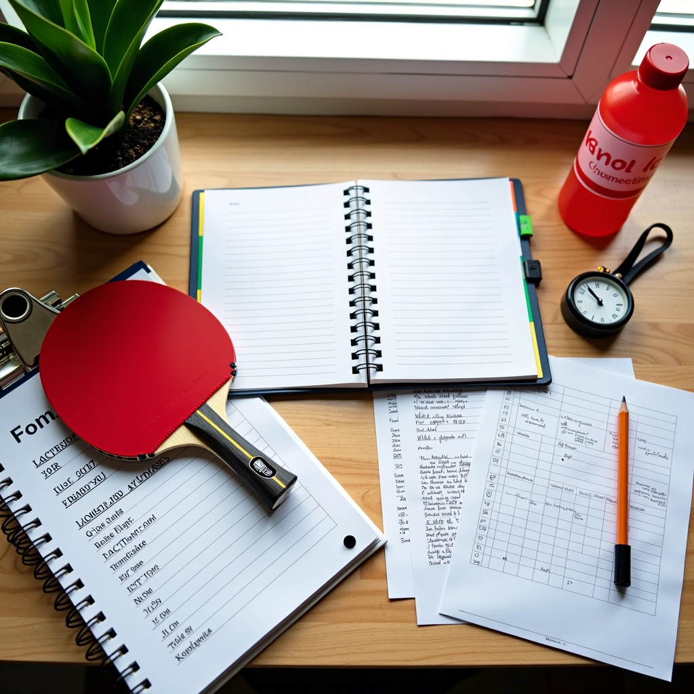

أساسيات الموقف والقبضة الصحيحة
تعلم كيفية اتخاذ الموقف الصحيح وحمل المضرب بطريقة احترافية لتحسين أدائك وتجنب الإصابات.
أساسيات
خطوات تفصيلية لإتقان الضربة الأمامية والخلفية والدوران والقطع. يركز على الأخطاء الشائعة وكيفية تصحيحها.
إتقان الضربات الأساسية والمتقدمة هو أساس أي لاعب محترف في تنس الطاولة. لا تعتقد أنك بحاجة إلى ضربات معقدة من البداية — الضربة الأمامية والخلفية الصحيحة هما كل ما تحتاجه للبدء.
تركز هذه الدراسة على التقنيات الفعلية التي يستخدمها اللاعبون المحترفون. نشرح كل حركة خطوة بخطوة، مع التركيز على الأخطاء الشائعة التي يرتكبها معظم الأشخاص — والطرق الحقيقية لتصحيحها. ستجد أن الفرق بين ضربة عادية وضربة احترافية ليس كبيراً كما قد تتخيل.

الضربة الأمامية هي ضربتك الأساسية. هذا هو المكان الذي ستقضي فيه معظم وقتك على الطاولة، لذا دعنا نتأكد من أنك تفعلها بشكل صحيح من البداية.
قدماك يجب أن تكونا بعرض الأكتاف تقريباً. القدم اليسرى (للاعب الأيمن) قليلاً للأمام. هذا يعطيك التوازن الذي تحتاجه للدوران والضغط.
اسحب المضرب للخلف والأعلى قليلاً. المرفق يجب أن يبقى قريباً من جسدك، والمضرب بزاوية حوالي 45 درجة. لا تحتاج لحركة كبيرة جداً — أكبر خطأ شائع هو الحركة الزائدة.
الكرة يجب أن تصطدم بالمضرب على ارتفاع حوالي 25-30 سم من الطاولة. اللحظة الحرجة هنا — اضرب الكرة بقوة لكن بسيطرة كاملة. معظم اللاعبين الشباب يضيعون السيطرة هنا.
انتهي الضربة بدوران الجسم الكامل. المضرب ينتهي به على جانبك الأيسر (للاعب الأيمن). هذه المتابعة تضيف قوة وتحسن الاتساق.
مارس هذه الخطوات 50 مرة في الجلسة. أنت لا تحتاج إلى ضرب الكرة بقوة كاملة — التركيز على التقنية أولاً، والقوة ستأتي بعد ذلك.


الضربة الخلفية أصعب قليلاً من الأمامية للاعبين الجدد، لكنها مهمة جداً. لا تتجنبها — هذا الخطأ الذي يرتكبه معظم المبتدئين. يجب أن تتعلم الضربة الخلفية الصحيحة من البداية.
نصيحة مهمة: معظم الأخطاء في الضربة الخلفية تحدث لأن اللاعب لا يدور جسده بما يكفي. أنت لا تلعب بذراعك فقط — أنت تلعب بجسمك كله. كلما زاد دورانك من الخصر، كلما كانت ضربتك أقوى وأكثر اتساقاً.
بمجرد إتقان الضربات الأساسية، حان الوقت لتعلم الضربات المتقدمة. الدوران والقطع هما ما يميز لاعب جيد عن لاعب عادي.
الدوران الأمامي يجعل الكرة تنحني للأسفل عند نهاية مسارها. هذا يسمح لك بضرب الكرة بقوة أكثر دون أن تذهب خارج الطاولة. المفتاح هو حركة المضرب الصاعدة — تخيل أنك تفرك الكرة من الأسفل للأعلى.
الحركة تبدأ منخفضة جداً (تحت مستوى الطاولة تقريباً) وتنتهي عالية عند الصدر. هذه الحركة الصاعدة هي ما تنتج الدوران. لا تقلق بشأن القوة في البداية — الدوران أهم من السرعة عند التعلم.
القطع هو عكس الدوران الأمامي. الكرة تدور للخلف (نحو الشبكة). هذا يجعل الكرة ترتفع بدلاً من أن تنخفض، مما يجعل من الصعب على خصمك الرد.
الحركة هنا نزولية — تبدأ من الأعلى وتنتهي من الأسفل. هذا عكس الدوران الأمامي تماماً. استخدم القطع عندما تكون في موقف دفاعي أو عندما تريد تغيير وتيرة اللعبة.


الآن تعرف الضربات. السؤال الحقيقي هو: كيف تمارسها بشكل صحيح؟ التمرين العشوائي لن يساعدك — تحتاج إلى خطة محددة.
ركز على الضربة الأمامية فقط. 100 ضربة في الجلسة، ببطء وسيطرة. لا تفكر في السرعة أو القوة — فقط التقنية الصحيحة.
أضف الضربة الخلفية. 50 ضربة أمامية + 50 خلفية. تعاقب بينهما. هذا يحسن توازنك والتحول بين الضربات.
ابدأ بالدوران والقطع. ركز على كل واحدة على حدة. 30 دوران أمامي + 30 قطع + 40 ضربات أساسية.
ادمج كل شيء معاً. لعبة حقيقية ضد خصم. استخدم الضربات التي تعلمتها في سياق حقيقي. هذا حيث تتحسن فعلاً.
ملاحظة مهمة: الاستمرارية أفضل من الكثافة. جلسة تدريب 3 مرات في الأسبوع لمدة 7 أسابيع أفضل بكثير من جلسة مكثفة واحدة. جسمك يتعلم من خلال التكرار المنتظم، وليس من التمارين الشاقة.
بعد تدريب المئات من اللاعبين، نرى نفس الأخطاء مراراً وتكراراً. إليك كيفية تجنبها من البداية.
معظم المبتدئين يعتقدون أنهم بحاجة إلى حركة كبيرة لضرب قوي. في الواقع، أفضل الضربات تأتي من حركات صغيرة وفعالة. أنت لا تحتاج إلى تأرجح المضرب بقوة — فقط اسحبه للخلف قليلاً ثم للأمام بسرعة.
الضربة الجيدة تأتي من الساقين والخصر، وليس من الذراع فقط. إذا كنت تستخدم ذراعك فقط، فإن ضربتك ستكون ضعيفة وغير متسقة. حرك جسمك كله.
لا تحاول أن تضرب بسرعة قبل أن تتقن التقنية. القوة والسرعة تأتيان بعد الممارسة المنتظمة. في الأسابيع الأولى، ركز على الضرب البطيء والمتحكم به.
يتجنب الكثير من اللاعبين الضربة الخلفية لأنها أصعب. هذا خطأ كبير. خصمك سيستهدف جانبك الضعيف. مارس الضربة الخلفية كما تمارس الأمامية.
إتقان الضربات الأساسية والمتقدمة ليس سراً معقداً. إنها مسألة تقنية صحيحة + ممارسة منتظمة + صبر. الكثير من اللاعبين الشباب يتوقعون نتائج فورية، لكن تنس الطاولة يتطلب وقتاً. ستة أسابيع من الممارسة المنتظمة ستحسن مستواك بشكل ملحوظ.
تذكر: الضربات التي تتعلمها الآن ستكون أساس لعبتك للسنوات القادمة. لا تسرع. خذ الوقت الكافي لتعلم التقنية الصحيحة من البداية. هذا سيوفر عليك الكثير من المشاكل لاحقاً.
ابدأ اليوم. لا تنتظر الموسم القادم أو الأسبوع المقبل. كل جلسة تمرين تحسنك. كل ضربة تعلمك شيئاً جديداً. هذا هو الطريق إلى التحسن الحقيقي.
هذه المقالة توفر معلومات تعليمية عامة عن تقنيات تنس الطاولة. النصائح والتوجيهات المقدمة هنا مبنية على الممارسات الشائعة في الرياضة، لكن قد تختلف احتياجات كل لاعب بناءً على عمره وقدرته البدنية ومستواه الحالي. نوصي بشدة بالعمل مع مدرب معتمد لضمان تعلم التقنيات بشكل صحيح وآمن. كل فرد لديه احتياجات فريدة، والمدرب المؤهل يستطيع تقديم توجيهات مخصصة أفضل من أي مورد عام.

الكاتب
فريق المحتوى التحريري
أعده فريق أكاديمية الطاولة التحريري، المتخصص في توفير إرشادات عملية وموثوقة لتحضير اللاعبين للبطولات.
استكمل تعلمك مع موضوعات أخرى مهمة لتحضير البطولات

تعلم كيفية اتخاذ الموقف الصحيح وحمل المضرب بطريقة احترافية لتحسين أدائك وتجنب الإصابات.

برامج تدريبية شاملة تجمع بين التدريبات على الطاولة والتمارين البدنية لتطوير التحمل والقوة.

نصائح عملية عن التغذية السليمة والنوم الكافي والتعافي بين الجلسات. تتضمن استراتيجيات نفسية للضغط.